Claude 这样的智能体，不只能解决数字世界里的很多事，还能真正走进物理世界。
解决这些看得见、摸得着的东西的问题，我感觉它的魔力，比写个文档、写段代码更让人着迷。
我最近就深陷其中，感觉欲罢不能了。
事情是这样的，我家里有几样设备，我一直想把它们用起来，但一直在家里积灰。
一台快 10 年的 Kindle，一块吃灰的 iDotMatrix 像素屏，这两样是老设备，我一直舍不得扔。
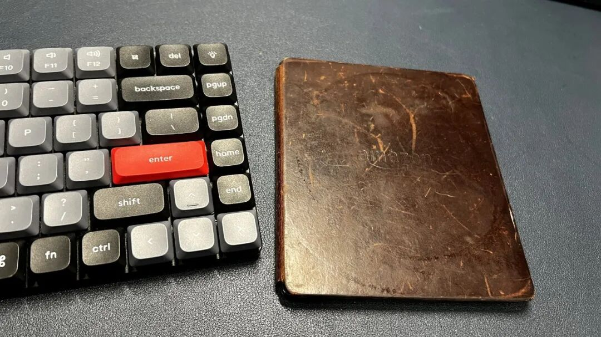
▲ 图：积灰多年的 Kindle Oasis
索尼电视和 Epson 打印机不算老，但我一直想折腾，只是不知道该怎么折腾。
最近看到不少人各种越狱，我也开始折腾起来。
这段时间，我把它们一件件交给了 Claude。
这篇我是拿 Claude 举例。换成别的智能体，比如 Codex、WorkBuddy，应该也能做到，不过我没在它们上面试过。(注意：你根本不需要懂那些硬件的原理以及怎么操作，你要做的仅仅是让它们能联网，其他的事情 Claude 都会指导你完成，或者它自己全部完成）
一台 10 年前的 Kindle
Kindle 我买了至少 3 台，最可惜的是这台 Kindle Oasis 一代，2016 年的机器，带一个可以拆的充电皮套。
说实话，这台机器阅读体验非常好，但我还是让它积灰了好多年。
我把它放下，其实不是因为它老。它唯一的问题，是接不了微信读书。
微信读书推出来之后，任何不能接微信读书的阅读器，我都认为是垃圾。这台当时花了血本买的 Oasis，就是其中一个。
每次都要去下载书，实在太麻烦，亚马逊中国也已经退出了。
但时代不一样了，我突然又想起了它。这才是我想把它重新拿起来用的原因。
但我不知道它还行不行。万事不决问 Claude，我先问它：这台老设备该怎么办？能不能越狱？能不能装上微信读书？
它先告诉了我方法，我再把 Kindle 插上电脑。
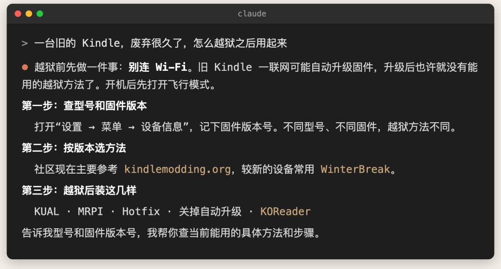
▲ 图：我问 Claude 怎么越狱
放了几年，Mac 连识别都识别不出来。
Claude 先查了 Mac 的 USB 设备列表，告诉我问题不在驱动，是电池放空了，先充电。充了一会儿能开机了，我拍了一张设备信息发给它。
最重要的是，它告诉我开机后立马设置飞行模式，否则可能会自动更新，那就麻烦了。
▲ 图：Kindle 设备信息
固件是 5.16.2.1.1。它告诉我可以越狱，我让它自己帮我搞定。
它去 kindlemodding.org 读了官方越狱向导背后的数据表，确认这个型号、这个固件能用一个叫 WinterBreak2 的方法，而且不需要登录亚马逊账号。
接下来的事，我基本只负责插线和点屏幕。你别说，越狱这事它真的专业。
它先往 Kindle 里塞了一个 1 GB 的占位文件，把存储填满，防止越狱时联网自动升级；再把越狱文件拷进去。
我在 Kindle 的浏览器里打开越狱页面，点了一下按钮。
然后屏幕上开始一行一行地刷日志，直接刷在我正在看的那页书上面，刷完自动重启。
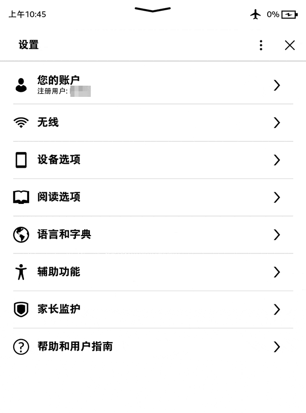
▲ 图：越狱全过程
几分钟就越狱完了，这体验真的谁用谁知道。
越狱这种事情我以前也干过，特别麻烦，要先看一堆文档，找对应的固件版本、备份资料等。但这次，我只需要根据提示点几下。
越狱之后装的是 KOReader，一个开源的阅读器，跑在 Kindle 系统上面，用来替换系统默认那个又丑又笨重的界面。
但我要的不只是一个新系统，最重要的是能用微信读书。所以又往上装了微信读书插件，再配一个叫 SimpleUI 的首页。
现在打开 Kindle，首页底栏就有“微信读书”，点进去就是我的书架。
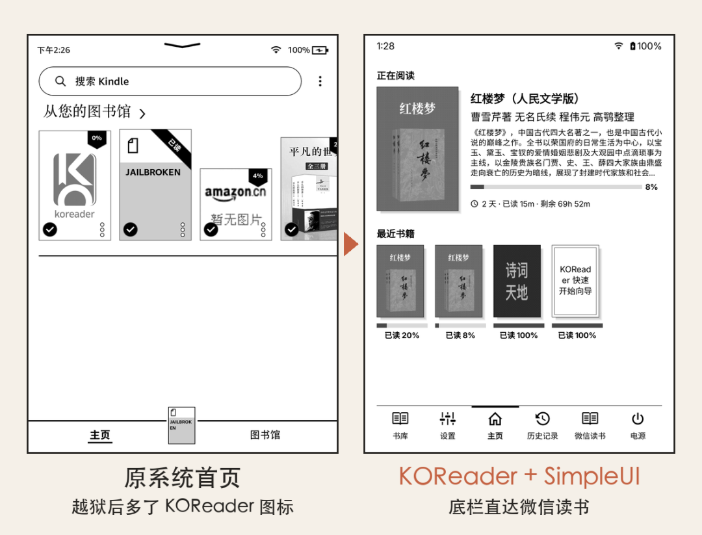
▲ 图：越狱前后的首页
▲ 图：微信读书书架
它再也不是只能用来盖泡面了。
用着用着，我发现操作巨卡。点一个按钮，半天没反应，我一度以为这设备太老，该扔了。
我随口问了 Claude 一句怎么回事。它查完告诉我：这台 Kindle 内存只有 512MB，现在两个系统都在跑，特别是老系统，内存已经耗光了。
它建议我直接把老系统停掉，只跑新的。
它的做法是在图书馆里加了一个“KOReader（省内存）”的启动项。从这里打开，KOReader 启动时先停掉 Kindle 原来的系统，退出时再自动恢复。
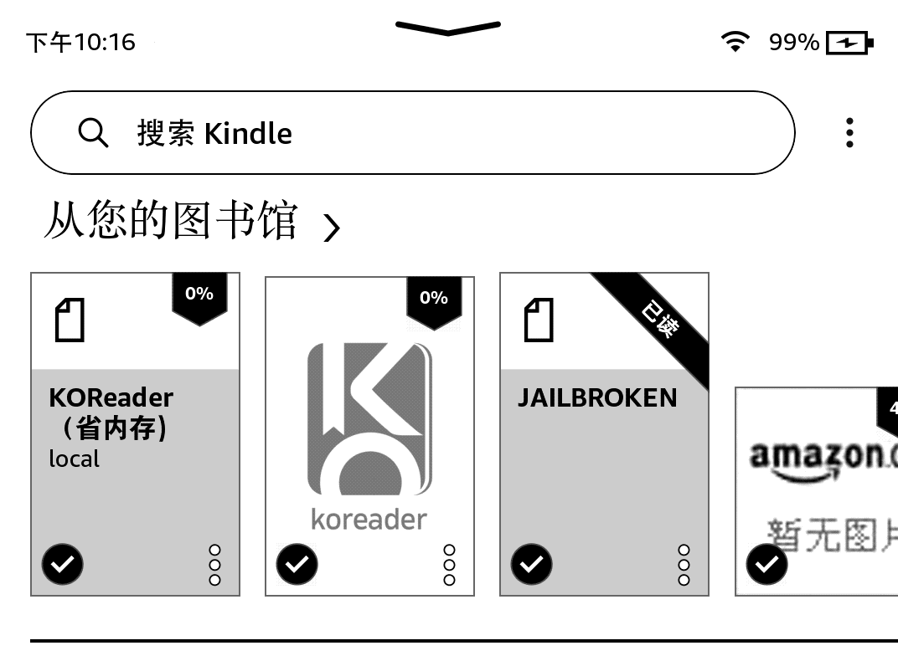
▲ 图：图书馆里多了“KOReader（省内存）”
光原系统的 Java 框架就占了 100 多兆，停掉以后，程序占用的内存从约 268MB 降到约 162MB。
内存省下来了，可菜单还是时灵时不灵。多点几下，它还莫名其妙截个屏。
我睡前把这事丢给它，让它自己查到底。
它给 KOReader 加了计时，一条一条看点击日志，最后发现问题不在内存：屏幕边上有个“看不见的手指”一直按着。
我每点一下，系统都以为是两根手指在操作。点菜单被当成了滑动，所以没反应；多点几下，就成了两指截屏。
它写了个补丁：哪个触点原地按住 5 秒不动，就当它是假的，记住那块位置，以后不理它。
这个假手指是怎么来的，还没确定，可能是充电时的干扰，也可能是有东西压着屏幕边。
它还顺手停掉了一个后台太重的插件。同一本书重新打开，从十来秒变成两秒多。
脚注全堆在每一回末尾，它翻了插件代码，发现是脚注格式没转换，改了一项排版设置就回到页面底部了。
Claude 真是一个厉害的专家。很多操作我不知道怎么搞，就让它自己去点那些菜单。
它甚至让我发现了这台 Kindle 的很多隐藏技能，比如这玩意居然能开 SSH，直接从电脑连进去。卧槽。
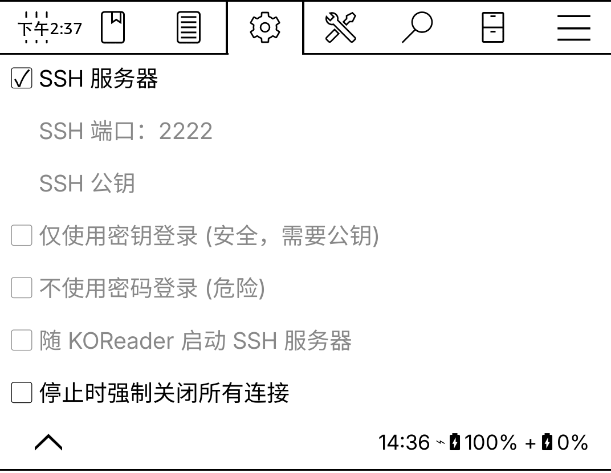
▲ 图：KOReader 里打开 SSH
后半程它就让我在 KOReader 里开了 SSH，之后在 Mac 上直接读 Kindle 的屏幕画面截图，还能模拟手指去点屏幕。
文章里很多截图，都是它这么远程截下来的。
把我在微信读书里的划线，放进 Kindle 的书里
越狱做完、原生界面换掉、微信读书装上，我吹毛求疵的毛病又犯了。
我希望在 Kindle 上看到别人的划线，还有我自己的划线和评论。找了几个插件，别人的划线能看到，我自己的都没实现。
最硬核的来了。它说：我帮你写一个，只要几分钟。这尼玛，我真是服了。
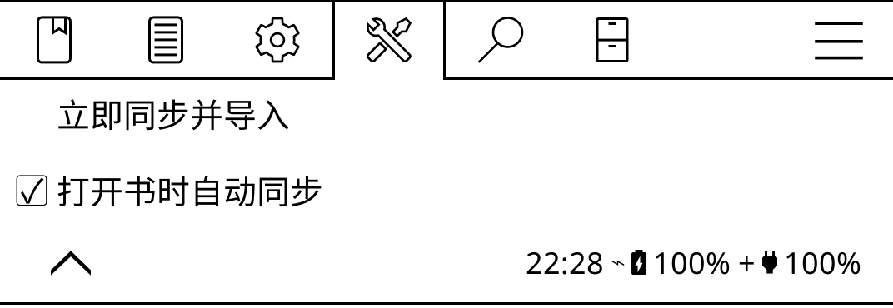
▲ 图：它写的插件，就在 KOReader 菜单里
微信读书插件能看书、能同步进度，也能显示别人的热门划线和想法，但我在手机上划过的线，Kindle 上看不到。
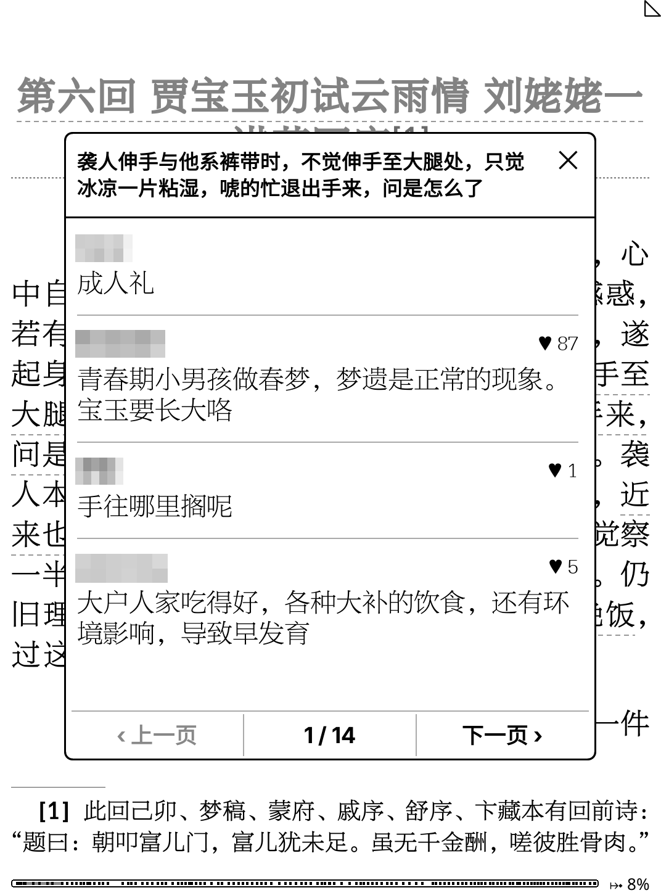
▲ 图：别人在这句话上的想法
它的办法是自己写。先用微信读书官方给个人开放的接口，把我的笔记全部拉下来：272 本书，8053 条划线，963 条想法。
然后写了一个 KOReader 小插件，打开一本书，按原文去书里找每一条划线的位置，找到了就加上高亮，想法挂在高亮上。
▲ 图：导入的划线，都在书签列表里
它还顺手把阅读界面调得很舒服：换上我原来就装着的方正博雅方刊宋，字太淡就加粗一点，脚注也回到了每页底部。
▲ 图：Kindle 里的《红楼梦》
我又提了一个要求：要自动同步。
它把插件改成打开书就自己拉：书打开 3 秒后，只要连着网，插件就在后台拉这本书最新的划线和想法，只加新的，已经导过的不会重复加。
我甚至还让 Claude 帮我做了一系列很文艺的锁屏封面：挑了十幅古画，每幅配一句古诗。
▲ 图：Claude 做的十张锁屏
▲ 图：Kindle 上的锁屏实拍
这些事，它都做完了。
它不只是拿现成的工具帮我做事，还能根据我的需求，做更深一层、甚至是定制化的事情。只要我能想到，它可能都能帮我做到。我觉得这是它最厉害的地方。（发稿后补充：应读者要求，Kindle（Oasis及Paperwhite1，其他未测） 越狱部分我做成了单独项目，交给你的 Agent 就能自动完成：https://github.com/finalbsd/kindle-jailbreak）
一台想改成 Apple TV 的索尼电视
电视是索尼 XR-65X90J，国行，Android 12，没有 Google 服务。
原生桌面我早就不用了，装了一个类似当贝的桌面。但用起来还是感觉很垃圾、很糟糕，有的地方甚至还有广告。
我想要的，是 Apple TV 那样很简约、很专业的效果。同时，我还想装一些自己想用的 App。
可要越狱它、破解它，又很难。到了 Claude 这儿，它分分钟就搞定了。
Claude 用 adb 连上电视，把应用助手、会员尊享、当贝助手、电视家这些预装的东西删掉。
换上 Projectivy 桌面，又装了 SmartTube、VLC、Netflix、QQ 音乐。
那一晚上它调了 254 次 adb，截了 150 次电视屏幕。
▲ 图：换上 Projectivy 的桌面
它不只是能帮我装 App、删 App。以前装 App 我也能装，但操作巨麻烦：基本都要先在电脑上找地方下载，再拷到 SD 卡里，插到电视上安装。
还有一些是远程安装，要在电视上输入一个网址，真的会让人想砸电视。
▲ 图：以前装 App，要用遥控器输网址
除了装、删 App，它还直接帮我调电视机的设置。现在的电视设置项特别多，说实话我从来没认真研究过，它帮我做了很多声音、画面方面的优化。
▲ 图：电视的图像设置
现在，我只要在 Claude 里说一句“打开电视”“音量调大”，电视就直接照做了。突然之间，我这台古老的电视机，有了语音遥控器。
现在，我终于可以随心所欲，在这台电视上干我想干的事了。
一台被我弄砖过的打印机
打印机是 Epson L4168。以前我为了越狱它，把它弄成了砖，后来花了几十块钱请人修好。
打印机的问题，就算你是再专业的程序员，可能也会束手无策。
我就经常碰到：打出来偏色了，或者重影了，不知道怎么弄，一搞就是半天。
每次要设置什么，都得在那块很有限的面板上按按钮。很多设置，说实话，我也不知道该怎么设。
我一度觉得这台打印机可能是最烂的，好多次想把它直接扔了。
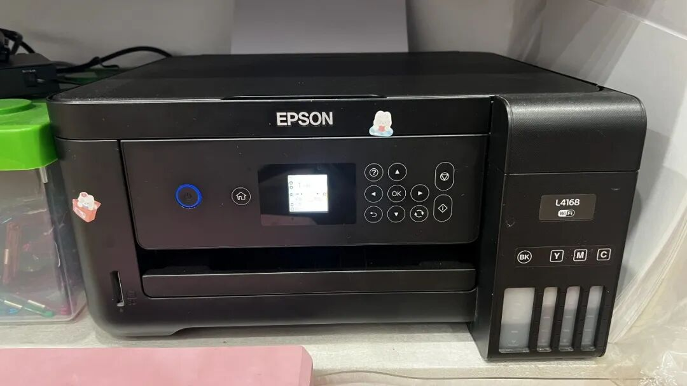
▲ 图：就是这台 L4168
这次国庆回来，我要给孩子打印一份小报。结果你猜怎么着，打印花的时间居然比做小报还要久。我心里真是一万只草泥马。
一开始是偏色，彩色全打成了黄色。
开始以为没墨了，后来又以为是太久没打、要清洗，我清洗了几次还是不行。最后我怀疑难道是驱动问题，找了半天重装了驱动，还是不行。反正一通折腾，死活就是搞不定。
弄了半天，至少一个小时，我真的都要放弃了。
我突然想到了 Claude：它能不能把打印机也搞定？结果真的让我震惊，它真的可以。
而且简单到离谱，它直接扫描到了打印机的 IP 地址，我也不知道它是怎么做到的，就直接去做设置了（正常还要登录啥的，它不需要）。
偏色这件事，它一上来就说，大概率不是驱动的问题，更像是青色、品红的喷嘴堵了，或者墨水不够。
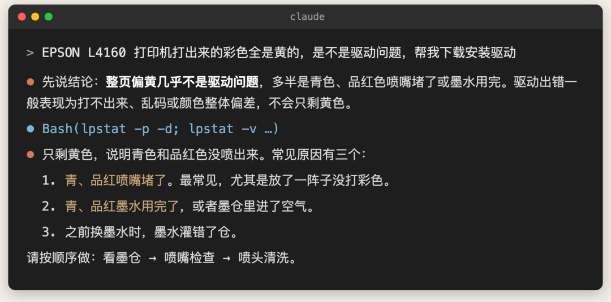
▲ 图：它说偏色不是驱动问题
偏色解决以后，打出来的图又糊了，字也看不清。
它查了打印设置，找到三个原因：打印浓度被调成了 -20，开了无边距加最大扩展（每边放大了大约 6%），厚纸用的却是普通纸模式。
它改了参数，直接用命令重打了一份。
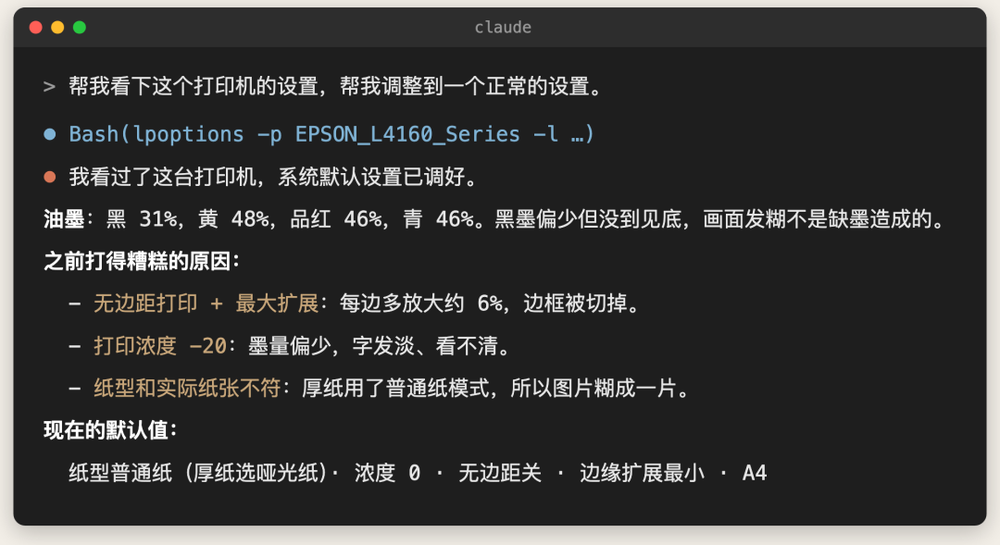
▲ 图：Claude 找到打糊的原因
过了两周，我打印一份带图片的文件，发现明显比之前慢很多，可以说是巨慢。
我又找它，它查出来默认质量是“精细”，改成了“标准”。这个“精细”，很可能就是两周前它自己设的。
现在我打印，都是直接在 Claude 里说一句。甚至我会要求它按我的要求来排版，比如字大一点、撑满整页纸。这完全颠覆了我之前打印的方式。
▲ 图：现在打印，直接跟 Claude 说
一块吃灰的像素屏
iDotMatrix 是一块 32×32 的蓝牙像素屏。当初买来是为了拍视频时放在背景里，后来就一直闲着。它完全成了一个废弃的产品，我也实在觉得它没什么用。
因为额度焦虑，我老是要去看 Claude 和 Codex 还剩多少额度。
我突发奇想：能不能用这块屏来显示？可又觉得好像不行，这东西好像不能联网，似乎还是个杂牌，哪有什么 API 啊？
离谱就离谱在，我只是把它开了机，Claude 居然自动检测到了，还告诉我这玩意能干很多事情。说实话，那一刻我真的超震惊。
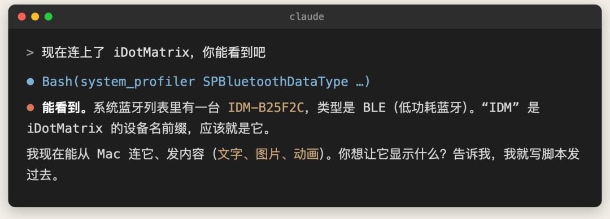
▲ 图：它在蓝牙列表里认出了这块屏
我开始的需求很简单，只想显示 Claude 的剩余额度，结果它分分钟就搞定了。
然后我就不满足了，问它还能干啥？它给我列了一堆，真的让我吃了一惊。
我以为只有 Claude 这种提供了接口的才能显示状态，结果它连我浏览器里的下载进度、飞书里有几条新消息和几条等我回复，都能显示。
我就觉得这事逐渐离谱了。
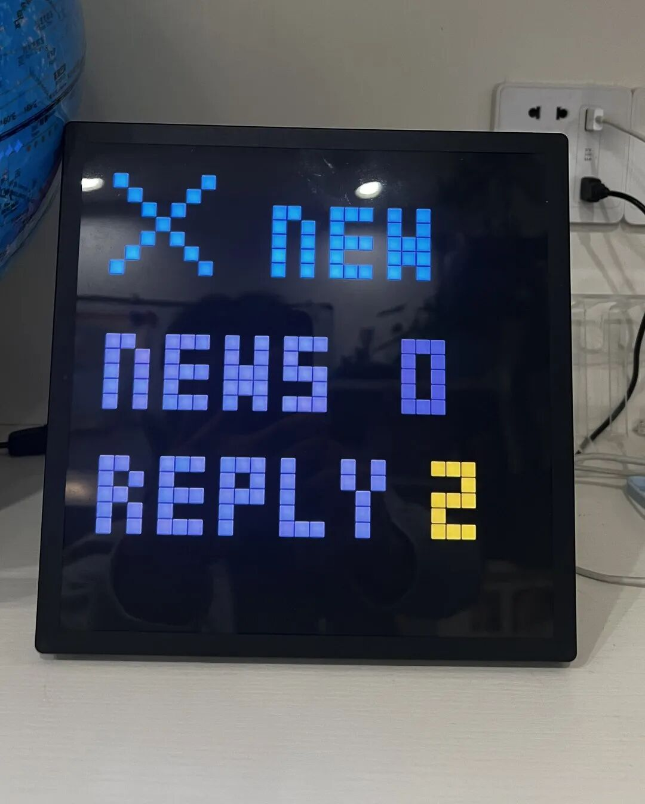
▲ 图：飞书来了新消息，屏上提示有几条
后来看记录才发现，它是这么做的：用一个开源的 iDotMatrix 库，通过蓝牙直接连上屏幕，在 Mac 上跑一个常驻程序。
Claude Code 和 Codex 每次开始干活、调用工具、等我确认、干完活，都会通知这个程序；程序再把状态画成 32×32 的小动图，推到屏上。
额度从 Claude 的状态栏和 Codex 的会话记录里读，下载进度由浏览器的下载助手上报。
我觉得最好用的是另一个状态：Claude 或 Codex 需要我确认、需要我输入的时候，屏幕会黄色闪烁提醒我。这一点我觉得非常好用。
下面两行是 Claude 和 Codex 的用量，5 小时和 7 天的额度，我不用打开网页就能看到还剩多少。
▲ 图：像素屏的实拍
这次用下来，我觉得这块屏还是蛮有感觉的。
写在最后
这几件事加起来，它偶尔会翻车，但每次都是它自己发现、自己修好，都不是什么大问题。
不管怎么样，它比我自己强多了。它能做到我以前根本做不到，甚至想都想不到的事情。
我甚至变态到把家里能玩的硬件都玩了一遍。
除了这些，我还把家里的 NAS 也拿出来重新整了一下。一样的，它也能很方便地操作这些东西。比如帮我整理了几万张照片，能整理，能去重，甚至还能做人脸识别。
所以我非常推荐你也去折腾一下家里的硬件。我把家里的设备都想了一遍，能联网的，基本上都想折腾一遍。
可惜冰箱、洗衣机、空调都联不了网，暂时没法弄。以后只要能联网，我都会第一时间去看看，能不能把它搞定。
说实话，有了 AI 之后，我前所未有地忙。我甚至蹲在马桶上，都在用 Claude 的 Remote Control 看它干活。这玩意真的让人上瘾。
我真的经常感叹现在这个时代。有句俗话：这是最好的时代，也是最坏的时代。我觉得放在现在更加合适。
这是一个最好的时代，AI 让所有人都变得前所未有地强大，很多原来想都不敢想、想了也做不到的事情，变得轻而易举。
这又是一个最坏的时代，我再一次觉得自己非常渺小，甚至有一种所谓的“AI 时代的虚无感”。因为它们太强大了，以至于我会觉得自己仿佛是个废物。
更可怕的是，这可能只是开始，我感觉它已经开始自我进化了。
明天不知道会怎么样，但至少现在，我很享受这种乐在其中的感觉。
你家里有没有一直想折腾、又不知道怎么下手的设备？
参考资料
01｜乔木：qiaomu-simpleui（KOReader 首页插件 SimpleUI 定制版）
https://github.com/joeseesun/qiaomu-simpleui